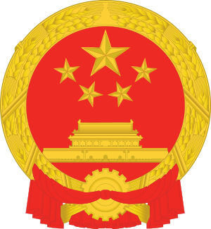

En 2020, se registratron 1.402 miles de millones de habitantes en el país de China.
Capital
La capital de China es Pekín, donde actualmente viven más de 20.463.000 habitantes.
Otras de las cuidades que pertenecen a China son Shanghai, Guangzhou, Shenzhen, Hong Kong,
Foshan, Tian- jin, Chongqing, Wuhan, Harbin, Shenyang, Chengdu, Zhengzhou...
Lenguas principales
El chino mandarín, es la lengua oficial de la República Popular China, siendo esta la lengua
estándar basada en el dialecto de Beijing.
Sabías que...
Hay cerca de 50.000 caracteres, de estos 3.000 se usan en el lenguaje corriente.
Tradicionalmente se escribía de manera vertical y de derecha a izquierda. Con la llegada de los computadores,
los procesadores de texto y del internet, se hizo necesario hacer compatible la comunicación escrita y con
lo cual se implementó la escritura horizontal y de izquierda a derecha para los caracteres chinos.
Para ser considerado como alfabetizado en idioma chino se deben conocer entre 3.000 y 4.000 caracteres.
Historia general de China
China es un país soberano de Asia Oriental. Es uno de los países más antiguos del mundo y el más poblado del
mundo, con más de 1400 millones de habitantes, y la primera potencia económica mundial por PIB en términos
de paridad de poder adquisitivo.
Si quieres saber un poco más de la historia general de China, pulsa sobre
este enlace.

Tiene un emblema nacional, el cual se encuentra a la derecha de este texto. El color rojo de la bandera simboliza
la revolución y el color amarillo de las estrellas los brillantes rayos dorados que irradian de la vasta tierra roja.
El diseño de cuatro estrellas más pequeñas que rodean a una más grande significa la unidad del pueblo chino bajo el liderazgo
del Partido Comunista de China (PCCh) — China Yearbook 2004. Si quieres saber más sobre el emblema nacional de China
pulsa sobre
este enlace.
Uno de los monumentos más importantes de China es la Gran Muralla China.
la cual se calcula que tiene unos 21 200 km de longitud y va desde la frontera con Corea hasta el desierto de Gobi.
Esta página está realizada por Marta Albarracín Martín Trabajo realizado por el Equipo 3, formado por: Marta Albarracín Martín, Jesús Cara Serrano,
Iván Fernández Aroca, Jonathan Martín Páez, Pablo Padial Salazar y Francisco Ruiz Nieto.